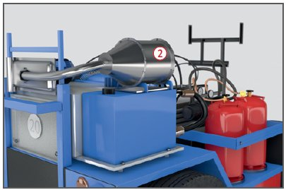
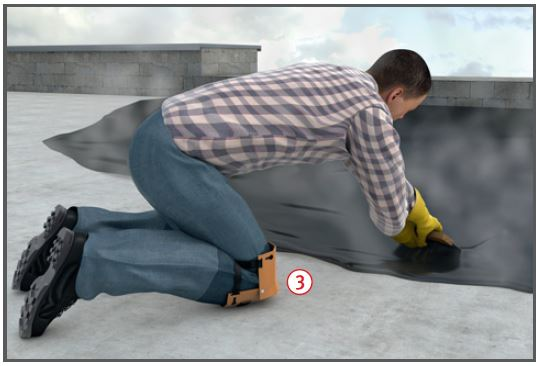

Bei der Aufnahme von Dämpfen und Aerosolen über die Atemwege kann es zu Gesundheitsschäden kommen.
Allgemeines
Beim Einbau von Gussasphalt entstehen Gefährdungen durch:
Dämpfe und Aerosole aus Bitumen,
Verbrennungen,
hohe Arbeitsplatztemperaturen,
Belastungen der Knie und Kniegelenke beim manuellen Einbau.
Zusätzliche Gefährdungen können in ganz oder teilweise geschlossenen Arbeitsbereichen durch:
Dieselmotoremissionen beim
Einsatz von fahrbaren Gussasphaltkochern und Dumpern,
eingeschränkte Sicht durch Dämpfe und Aerosole
entstehen.
Schutzmaßnahmen
Seit 2008 ist nur noch der Einbau von temperaturabgesenktem Gussasphalt mit Temperaturen bis max. 230 °C zulässig.
Temperaturabsenkung erreichen durch viskositätsverändernde Bindemittel oder Zusätze, z. B. Amid-Wachse, Paraffine oder Zeolithe. Durch die Zusätze bleibt trotz abgesenkter Temperatur die notwendige Fließfähigkeit des Asphalts erhalten.
Gussasphalt vorrangig maschinell einbauen mit beheizbaren Abziehbohlen, die als Verteil- und Glättvorrichtung wirken (ab einer Einbaubreite von 1 m einsetzbar) .
Als Trennmittel Seifenlösungen verwenden.
Keinen Dieselkraftstoff oder Altöl als Trennmittel verwenden.
Für den Einbau in umschlossenen Räumen, wenn möglich elektrisch betriebene Geräte einsetzen. Sollte dies nicht möglich sein, dieselbetriebene Fahrzeuge mit Dieselpartikelfilter ausrüsten.

Können temperaturabgesenkte Gussasphalte nicht eingebaut werden, alternativ Ersatzstoffe verwenden: In umschlossenen Räumen, wie Tiefgaragen und Hallen, anstelle von Gussasphalt speziell entwickelte Zementestriche einbauen.
Direkten Hautkontakt mit heißem Gussasphalt durch geschlossene Kleidung und wärmebeständige Schutzhandschuhe, z. B. aus Leder, verhindern.
Knieschutz verwenden .

Sicherheitsschuhe mit wärmeisolierendem Unterbau verwenden (Kennzeichnung HI).
Das Tragen von Atemschutz schließt sich aufgrund der Arbeitsplatztemperatur aus und ist darüber hinaus als ständige Maßnahme nicht zulässig.
Beim Einsatz im öffentlichen Verkehrsraum Baustelle gemäß RSA sichern und zwischen Arbeits- und Verkehrsbereich gemäß ASR A5.2 einhalten.
Arbeitsmedizinische Vorsorge
Arbeitsmedizinische Vorsorge nach Ergebnis der Gefährdungsbeurteilung veranlassen (Pflichtvorsorge) oder anbieten (Angebotsvorsorge). Hierzu Beratung durch den Betriebsarzt.
Weitere Informationen: Verordnung zur arbeitsmedizinischen Vorsorge Gefahrstoffverordnung
ASR A5.2 Anforderungen an Arbeitsplätze und Verkehrswege auf Baustellen im Grenzbereich zum Straßenverkehr – Straßenbaustellen – TRGS 554 Abgase von Dieselmotoren
Gesprächskreis Bitumen 2009: Temperaturabgesenkte Asphalte
Merkblatt für Temperaturabsenkung von Asphalt – M TA, 2006, Forschungsgesellschaft für Straßen- und Verkehrswesen (FGSV)